Version 1.5
Little Logbook ist ein Ansichts- und Abfrageprogramm für das Flugsimulator Logbuch. Es erlaubt das intuitive und schnelle Filtern und Gruppieren von Logbucheinträgen anhand mehrerer Parameter sowie den Export in HTML-, CSV- und Google Earth KML-Dokumente.
Zusammen mit den MakeRunways Utility von Peter Dowson werden über das eigentliche Logbuch hinaus zusätzliche Informationen zu Flugplätzen angezeigt und der Google Earth KML Export ermöglicht.
Prepare3d oder FSX SE wurden bisher nicht getestet.
Ein Installer bzw. Setup-Programm steht nicht zur Verfügung.
Das Archiv sollte nicht in c:\Programme\ oder in
c:\Programme (x86)\ installiert werden, da dazu unter manchen Windows Versionen
Administratorrechte nötig sind. Da Windows Kontrolle über diese Ordner behält, können weitere
Probleme auftreten, wie gelöschte oder ersetzte Dateien.
Das Zip-Archiv in einen beliebigen Ordner, wie z.B. c:\Meine Programme\Little
Logbook extrahieren. Das Programm anschließend durch Doppelklick auf die
littlelogbook.exe starten.
Little Logbook ist eine 32 Bit Anwendung und wurde unter Windows XP, Windows 7 64 Bit und Windows 8.1 64 Bit getestet.
Das Programm versucht beim ersten Start die Datei Logbook.BIN zu finden und in
eine interne Datenbank zu lesen. Wird die Datei nicht gefunden, erscheint ein
Dateiauswahldialog, mit dem Logbook.BIN ausgewählt werden kann.
Das Programm merkt sich die zuletzt ausgewählte Logbuchdatei. Falls Änderungen beim Start festgestellt werden, wird die Datei neu in die interne Datenbank geladen.
Wenn das MakeRunways Utility von Peter Dowson installiert und ausgeführt wurde,
können über die Datei runways.xml im FSX-Basisverzeichnis zusätzliche
Informationen über Flugplätze angezeigt werden.
Zusätzliche Informationen, die in der Tabellenansicht dargestellt und durchsucht werden können, sind Flugplatzname, Stadt, Bundesstaat und Land. Mehr Flugplatzinformationen stehen über den Tooltip der Start- und Ziel-ICAO Felder zur Verfügung.
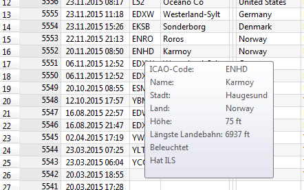
Bild oben: Flugplatzinformationen, die angezeigt werden, wenn
runways.xml geladen wurde.
Falls die runways.xml-Datei gefunden und geladen wurde, wird sie auf zukünftige
Änderungen überwacht und bei Bedarf neu geladen.
Das MakeRunways Utility kann auf Peter Dowsons Seite heruntergeladen werden.
Öffnet eine andere Logbook.BIN-Datei und lädt diese in die interne Datenbank.
Little Logbook merkt sich anschließend die Datei und überwacht sie auf Änderungen.
Lädt die früher ausgewählte Logbook.BIN-Datei neu in die interne Datenbank.
Beendet das Programm nach einem Abfragedialog, der optional ausgeschaltet werden kann.
Schaltet die jeweiligen Leisten und Fenster an oder aus. Little Logbook merkt sich diese Einstellungen.

Die Tabellenansicht zeigt anfänglich nicht alle Einträge des Logbuches an. Mit diesem Menüpunkt können sämtliche Eintrage in die Tabellenansicht geladen und angezeigt werden. Nach der Eingabe eines neuen Suchfilters oder einer neuen Sortierung wird wiederum nur ein Teil der Ergebnisse angezeigt.
Die Anzahl der vorhandenen, ausgewählten und angezeigten Einträge werden in der Statuszeile vermerkt.

Setzt die Sortierung, Spaltenreihenfolge und Spaltenbreiten der Tabellenansicht nach einem Nachfragedialog auf die Standardeinstellungen zurück.
Löscht alle Eingaben in den Suchfiltern und zeigt wieder alle Logbucheinträge in der Tabellenansicht an. Siehe weiter unten zu Suchfiltern.

Eine vorher erstellte Gruppierung wird aufgelöst und zur normalen Ansicht zurückgekehrt. Siehe weiter unten zum Erstellen von Gruppierungen.
Entweder alle oder nur die ausgewählten Logbucheinträge in der Tabellenansicht können exportiert werden.
Wenn diese Menüpunkt ausgewählt ist, werden die Dateien nach dem Export in einem passenden Programm geöffnet. Für HTML ist das der Standardbrowser und für CSV beispielsweise Excel oder LibreOffice Calc.
Im Gegensatz zum HTML-Export werden CSV-Dokumente unabhängig von der Ansicht immer mit allen Spalten und in der gleichen Spaltenreihenfolge exportiert.
Als Feldtrennzeichen wird ; benutzt und ", um Zeichenketten zu
markieren. Die verwendete Codepage hängt von den Betriebssystemeinstellungen ab. Unter
Windows ist das im Westeuropäischen Raum meist Windows-1252 und unter Mac und
Linux UTF-8.
Der HTML-Export erstellt das exportierte Dokument mit der gleichen Spaltenreihenfolge und Sortierung, wie es in der aktuellen Tabellenansicht anzeigt wird. Das gilt auch für gruppierte Ansichten.
Spalten, die auf Minimalbreite zusammengezogen sind, werden nicht exportiert. Dies ist eine Möglichkeit, das exportierte Dokument im begrenzten Maße zu gestalten.
Zu große Dateien können zu langen Ladenzeiten führen oder den Browser zum Absturz bringen. Daher sollte die Anzahl der Einträge durch Filter oder eine passende Auswahl auf unter 5.000 Logbucheinträge begrenzt werden.
Alle Dialoge, die mit der Diesen Dialog nicht wieder anzeigen Option
ausgeschaltet wurden, werden wieder aktiviert.
Zeigt die Hilfe an.
Zeigt Informationen über Little Logbook.
Zeigt Informationen über das zur Programmierung verwendete Qt Toolkit.
Alle Suchfilter können parallel benutzt werden. Die Begriffe können dabei mit einer und- sowie einer oder-Bedingung verknüpft werden.
Wenn die Datei runways.xml des MakeRunways Utility nicht geladen wurde,
werden einige Suchfelder ausgeblendet.
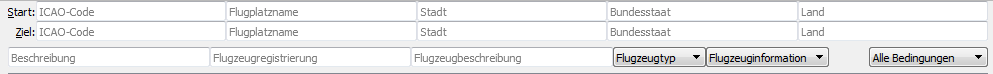
Bild oben: Suchfilter, die angezeigt werden, wenn
runways.xml gefunden wurde.
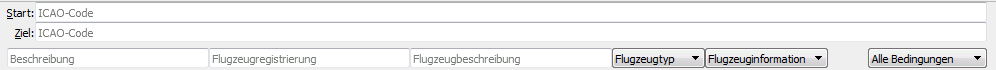
Bild oben: Die reduzierte Suchleiste, wenn runways.xml
nicht gefunden wurde.
Über die Etiketten Start: und Ziel: ist eine Tooltip-Kurzhilfe
verfügbar.
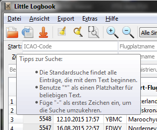
Die Standardsuche sucht alle Begriffe im Logbuch, die mit den eingegeben Zeichen beginnen.
Der Platzhalter * steht für beliebigen Text. Sobald ein * im
Suchbegriff enthalten ist, wird die Standardsuche nicht mehr benutzt.
Wenn das erste Zeichen in einem Suchfeld ein - ist, wird die Suche negiert
(suche alle Einträge außer den passenden).
In diesem Kombinationsfeld wird festgelegt, wie die Suchfilter verknüpft werden.
Alle Bedingungen: Alle Suchfilter müssen passen, damit ein
Eintrag in der Ansicht erscheint (und-Verknüpfung).
Einige Bedingungen: Mindestens ein Suchfilter muss
übereinstimmen, damit ein Eintrag in der Ansicht erscheint (oder-Verknüpfung).
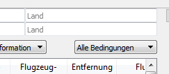
EDD in Start: ICAO-Code findet EDDF, EDDW, EDDL.
*DD in Start: ICAO-Code findet KRDD.
*DD* in Start: ICAO-Code findet EDDF,
KRDD, LDDU.
ED in Start: ICAO-Code und ED in
Ziel: ICAO-Code in Verbindung mit der Bedingung Alle
Bedingungen findet alle Flüge innerhalb Deutschlands.
ED in Start: ICAO-Code und ED in
Ziel: ICAO-Code in Verbindung mit der Bedingung Einige
Bedingungen findet alle Flüge, die Deutschland als Start oder Ziel haben.
-*Beech* in Flugzeugbeschreibung findet alle Flüge, die nicht mit
einem Beechcraft Flugzeug durchgeführt wurden.
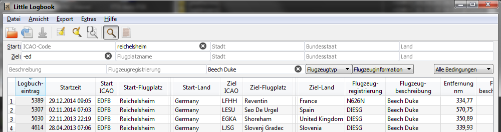
Bild oben: Suche für alle Flüge mit der Beech Duke, die in Reichelsheim gestartet sind und kein Ziel in Deutschland haben.
Die Tabellenansicht verfügt über zwei Ansichten:
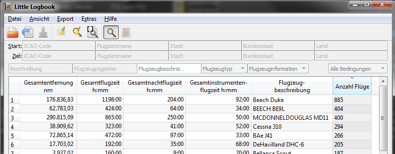
Bild oben: Die Ansicht ist nach Flugzeugbeschreibung gruppiert und absteigend nach Anzahl der der Flüge sortiert, um das meist geflogene Flugzeug zu finden.
Die Kopfzeile der Tabellenansicht erlaubt folgende Manipulationen:
Das Programm merkt sich die Spaltenbreiten und -positionen, bis Ansicht
zurücksetzen ausgeführt wird.
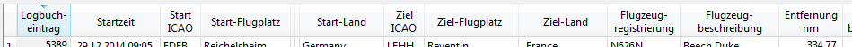
Bild oben: Die Spalten zwischen Start-Flugplatz und Start-Land wurden auf Minimalgröße reduziert. Sie werden somit vom HTML-Export ausgeschlossen.
Folgende Spalten werden in der normalen Ansicht angezeigt:
Logbucheintrag: Nummer des Logbucheintrages. Gibt die zeitliche
Reihenfolge wieder, wann der Flug stattfand. Die größte Nummer ist der letzte Flug.
Startzeit: Datum und Zeit des Fluges, die im Flugsimulator
eingestellt waren. Ein Tooltip zeigt ein detailliertes Datum an.
Start ICAO: Drei- oder vierstelliger ICAO-Code des
Startflugplatzes. Ein Tooltip zeigt Informationen zum Flugplatz an*.
Start-Flugplatz*
Start-Stadt*
Start-Bundesstaat*: Bundestaat oder Provinz, wenn vorhanden.
Start-Land*
Ziel ICAO: Drei- oder vierstelliger ICAO-Code des
Zielflugplatzes. Ein Tooltip zeigt Informationen zum Flugplatz an*.
Ziel-Flugplatz*
Ziel-Stadt*
Ziel-Bundesstaat*: Bundestaat oder Provinz, wenn vorhanden.
Ziel-Land*
Entfernung*: Kürzeste Entfernung zwischen Start- und
Zielflugplatz in nautischen Meilen. Ein Tooltip zeigt die Entfernung in Kilometern. Dies
ist nicht die tatsächlich geflogene Entfernung, sondern die Luftlinienentfernung zwischen
Start und Ziel.
Flugbeschreibung: Kommentar zum Flug, der im Simulator gesetzt
werden kann.
Flugdauer: Dauer des Fluges in Stunden und Minuten.
Nachtflug: Der Nachtanteil in Stunden und Minuten.
Instrumentenflug: Der Instumentenfluganteil (oder IFR-Anteil)
aufgrund geringer Sichtweite oder Wolken in Stunden und Minuten.
Flugzeugregistrierung: Registrierungscode des Flugzeuges, wie
z.B. D-IESG.
Flugzeugbeschreibung: Beschreibung des Flugzeuges, wie z.B.
Beech Duke.
Flugzeugtyp: Typ des Flugzeuges, wie Helikopter oder
Starrflügel.
Flugzeuginformationen: Sonstige Informationen zum Flugzeug.
Momentan wird nur erfasst, ob das Flugzeug mehrmotorig ist oder nicht.
Besuchte Flugplätze/Landungen: Zwischenziele und Anzahl der Landungen.
* Diese Spalten stehen nur zur Verfügung, wenn die Datei runways.xml des
MakeRunways Utility geladen wurde.
Die Statuszeile zeigt die Anzahl der Einträge sowie die Anzahl der sichtbaren und ausgewählten Einträge in der Tabellenansicht an.
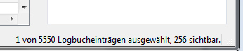
Bestimmte Einträge im Kontextmenü der Tabellenansicht stehen nicht immer zu Verfügung. So kann z.B. keine Gruppierung zur Flugdauer erstellt werden, da kein sinnvolles Ergebnis zu erwarten wäre.
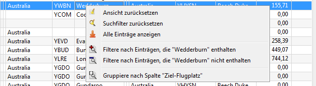
Die Funktion dieser Menüpunkte ist identisch mit denen im Menü Ansicht.
Nimmt den Text des Feldes unter dem Mauszeiger und setzt die Suchfilter für eine inklusive oder exklusive Suche.
Erlaubt die Gruppierung um eine Spalte. Alle gleichen Werte dieser Spalte werden zusammengefasst und die Summen für andere Spalten angezeigt.
So kann z.B. eine Gruppierung über die Flugzeugbeschreibung, die Anzahl der Flüge und die Gesamtflugzeit für jeden Flugzeugtyp angezeigt werden.
Um zur normalen Ansicht zurückzukehren, den Menüpunkt Gruppierung auflösen
auswählen.
Diese zeigt Informationen zum gesamten Logbuch an. Der Inhalt aus dieser Ansicht kann als formatierter Text kopiert und dann in Dokumente oder Webseiten eingefügt werden.
Die Gesamtstatistik ist ein sogenanntes Dock-Fenster, das im Hauptfenster an verschiedenen Stellen angedockt oder auch herausgelöst werden kann.
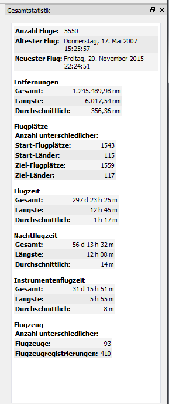
Dieses Programm ist Freie Software: Sie können es unter den Bedingungen der GNU General Public License, wie von der Free Software Foundation, Version 3 der Lizenz oder (nach Ihrer Wahl) jeder neueren veröffentlichten Version, weiterverbreiten und/oder modifizieren.
Dieses Programm wird in der Hoffnung, dass es nützlich sein wird, aber OHNE JEDE GEWÄHRLEISTUNG, bereitgestellt; sogar ohne die implizite Gewährleistung der MARKTFÄHIGKEIT oder EIGNUNG FÜR EINEN BESTIMMTEN ZWECK.
Siehe die GNU General Public License für weitere Details.
Sie sollten eine Kopie der GNU General Public License zusammen mit diesem Programm erhalten haben. Wenn nicht, siehe http://www.gnu.org/licenses.